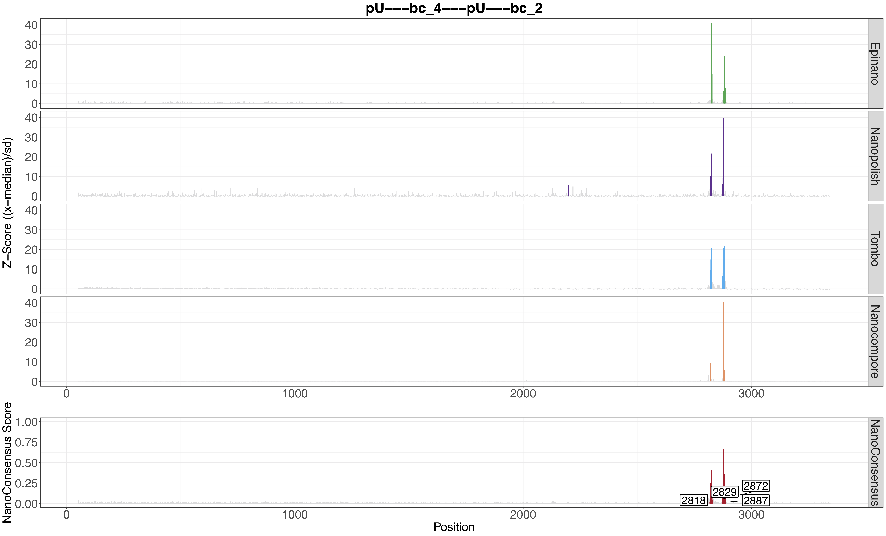

MOP_CONSENSUS
This pipeline takes as input the output from MOP_MOD with all the four worklows. It outputs the consensus of the diferent predictions running the tool Nanoconsensus in parallel on each transcript for each comparison.
Input Parameters
The input parameters are stored in yaml files like the one represented here:
input_path: "${projectDir}/../mop_mod/output_mod"
reference: "/path/to/reference.fa"
comparison: "comparison.tsv"
padsize: 50
output: "${projectDir}/output"
extraparams: ""
email: ""
How to run the pipeline
Before launching the pipeline,user should:
Decide which containers to use - either docker or singularity [-with-docker / -with-singularity].
Fill in both params.config and tools_opt.tsv files.
To launch the pipeline, please use the following command:
nextflow run mop_consensus.nf -params-file params.yaml -with-singularity > log.txt
You can run the pipeline in the background adding the nextflow parameter -bg:
nextflow run mop_consensus.nf -params-file params.yaml -with-singularity -bg > log.txt
You can change the parameters either by changing params.config file or by feeding the parameters via command line:
nextflow run mop_consensus.nf -params-file params.yaml -with-singularity -bg --output test2 > log.txt
You can specify a different working directory with temporary files:
nextflow run mop_consensus.nf -params-file params.yaml -with-singularity -bg -w /path/working_directory > log.txt
Results
Here an example of a result:
{kind=link}